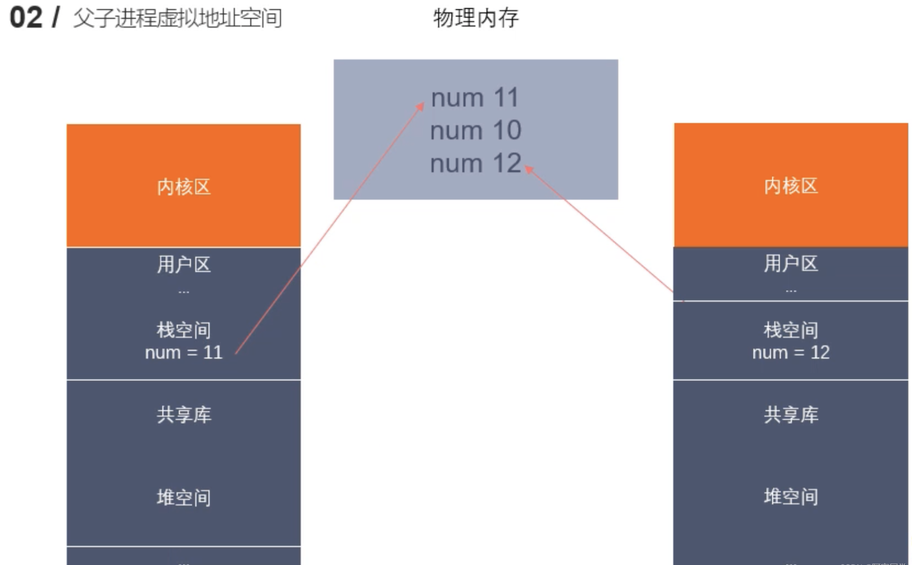

Linux系统调用之fork，getpid，getppid函数
如果，想要深入的学习Linux系统调用中的fork，getpid，getppid函数，还是需要去自己阅读Linux系统中的帮助文档。
具体输入命令：
1 | man 2 fork/getpid/getppid |
即可查阅到完整的资料信息。
fork函数
fork() 函数是 UNIX/Linux 系统中的一个系统调用 (system call)，它会创建一个新的进程，称为子进程，该子进程是原始进程的副本。
调用 fork() 后，两个进程都将从当前指令序列的下一条指令开始运行，但子进程完全复制了父进程的内存空间、打开文件等状态信息（子进程获得了对共享内存区域的独立控制权，即父进程和子进程之间不会相互干扰）。
我们可以通过返回值来区分是在哪个进程中。具体地讲，在父进程中，它返回子进程的 Process ID (PID) ，而在子进程中，它返回0.
fork()的函数原型是长这样的：
1 | pid_t fork(void); |
在使用这个函数之前，我们需要往C/C++文件中导入这些头文件：
1 | #include <sys/types.h> |
下面用一个代码例子来演示一下fork函数的作用：
1 | #include <sys/types.h> |
输出内容：
1 | nowcoder@nowcoder:~/Linux/lession18$ cd "/home/nowcoder/Linux/lession18/" && gcc fork.c -o fork && "/home/nowcoder/Linux/lession18/"fork |
在这个例子中，代表父进程的 if (pid > 0) 分支和代表子进程的 if (pid == 0) 分支会同时执行。
简单来说，fork() 的作用就是在程序中生成一个新的进程，这个新的进程和原有进程基本一致，除了 fork() 的返回值。这两个进程几乎是同时运行的。一般情况下，父进程将 fork() 的返回值保存，并通过这个唯一的返回值标识子进程。子进程也可以通过 getppid 获得其父进程的 PID.
实际上，更准确来说，Linux 的 fork() 使用是通过写时拷贝 (copy- on-write) 实现。写时拷贝是一种可以推迟甚至避免拷贝数据的技术。内核此时并不复制整个进程的地址空间，而是让父子进程共享同一个地址空间。只用在需要写入的时候才会复制地址空间，从而使各个进行拥有各自的地址空间。也就是说，资源的复制是在需要写入的时候才会进行，在此之前，只有以只读方式共享。
大概就向图中一样：

注意：fork之后父子进程共享文件，
fork产生的子进程与父进程相同的文件文件描述符指向相同的文件表，引用计数增加，共享文件偏移指针。
getpid函数
获取当前进程的pid。这个pid与ps命令里显示的进程id一致。
getppid函数
获取当前进程的父进程的id。这个ppid与ps命令里显示的进程id一致。
子进程共享父进程的文件描述符表：
当父进程使用 fork 系统调用创建一个子进程时，子进程会继承父进程的文件描述符表。这意味着子进程会获得父进程打开的所有文件和 I/O 资源的文件描述符。实际上，子进程会得到父进程文件描述符表的一个副本。因此，它们并不是共享同一个文件描述符表，而是子进程拥有父进程文件描述符表的副本。然而，由于子进程和父进程的文件描述符都指向同一个文件或 I/O 资源，所以在某种程度上可以认为它们共享文件描述符。
“读时共享，写时拷贝”（Copy-on-Write）机制：
这是 Linux 系统在进行内存管理时所使用的一种优化技术。当父进程创建子进程时，操作系统并不会立即为子进程分配所有内存资源，而是让子进程和父进程共享相同的物理内存页。只有当父进程或子进程试图修改某个内存页时，系统才会复制该内存页，为执行写入操作的进程创建一个新的物理内存页。这样做的好处是节省内存资源，同时提高了 fork 操作的性能。
文件描述符表与“读时共享，写时拷贝”机制是两个不同层面的概念.
当父进程 fork 了一个子进程后，子进程会继承父进程的文件描述符表。实际上，子进程得到的是父进程文件描述符表的一个副本，而不是共享同一个文件描述符表。这意味着子进程和父进程的文件描述符表是相互独立的，但它们指向的文件和 I/O 资源是相同的。
“读时共享，写时拷贝”机制是在内存管理层面进行的优化。这意味着父子进程在 fork 之后共享相同的物理内存页。只有当父进程或子进程试图修改某个内存页时，系统才会复制该内存页，为执行写入操作的进程创建一个新的物理内存页。这个过程与文件描述符表无关，涉及的是进程间内存资源的共享与复制。
总之，父子进程在 fork 之后并不共享同一个文件描述符表，而是各自拥有文件描述符表的副本。这与“读时共享，写时拷贝”机制是不同的，后者涉及的是进程间内存资源(物理内存页)的共享与复制。
这个物理内存页都记录了哪些信息呢？
物理内存页（Physical Memory Page）是计算机内存管理的基本单位。在操作系统中，物理内存被划分为固定大小的页，通常为 4KB、2MB 或更大。物理内存页用于存储各种类型的数据和信息，包括：
- 程序代码：程序的可执行代码通常被加载到内存中，以便 CPU 能够直接访问和执行这些指令。
- 数据：程序运行时所需的各种数据，包括全局变量、静态变量等，都存储在内存中。这些数据可能在程序执行过程中被读取或修改。
- 堆内存：堆是一个动态内存分配区域，用于存储程序运行时动态分配的内存。堆内存的大小在程序运行过程中可能会发生变化，可以通过 malloc、calloc 等函数分配内存，通过 free 函数释放内存。
- 栈内存：栈是程序运行时的临时存储区，用于存储函数调用过程中的局部变量、函数参数以及返回地址等信息。栈内存由编译器自动分配和回收，具有后进先出（LIFO）的特点。
- 其他内核数据结构：操作系统会在内存中维护一些内核相关的数据结构，如进程控制块（PCB）、文件描述符表等，这些数据结构在操作系统中起着关键作用。
总之，物理内存页存储了程序执行所需的各种信息，如代码、数据、堆内存、栈内存等。这些信息在程序运行过程中可能被多个进程共享或独占。
————————————————